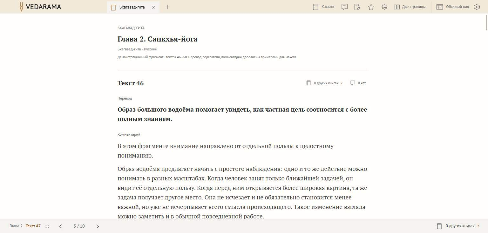
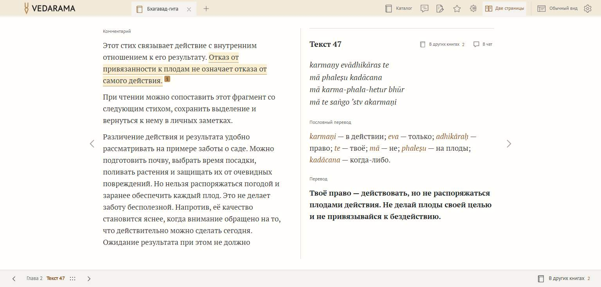
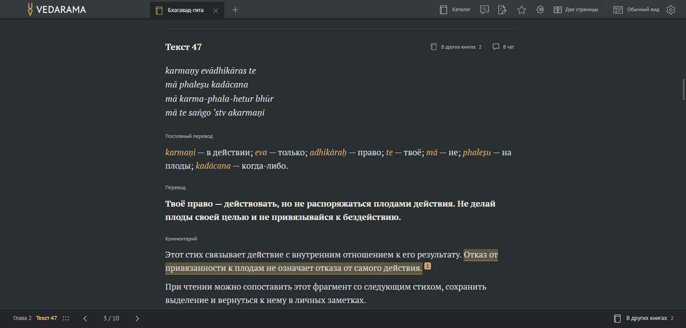
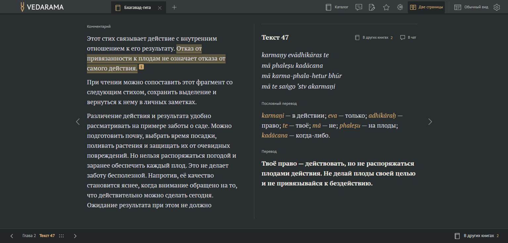

Одна страница → две страницы280 мс · без смещения‹›0 мсСтарый текст исчезает перед появлением новогоВсе кадры рядом ↗
Две страницы → одна страница280 мс · без смещения‹›0 мсСтарый текст исчезает перед появлением новогоВсе кадры рядом ↗
Тёмная тема · одна → две280 мс · без смещения‹›0 мсСтарый текст исчезает перед появлением новогоВсе кадры рядом ↗
Тёмная тема · две → одна280 мс · без смещения‹›0 мсСтарый текст исчезает перед появлением новогоВсе кадры рядом ↗